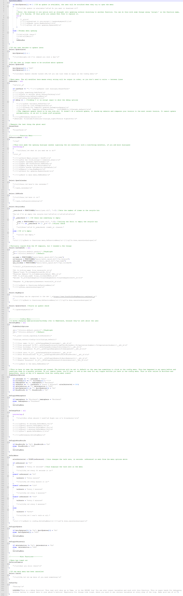
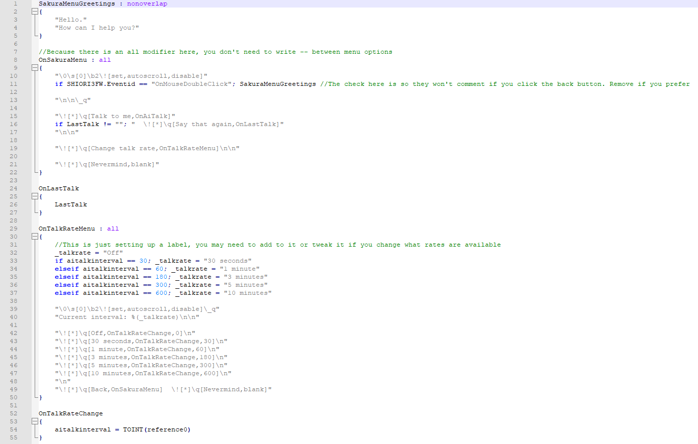

Features
- Writing focused template with little to no coding required.
- Very small template that does not take long to fill in.
- Minimal coding means that if you do want to add your own code, the template stays out of your way and provides a clean base to work from.
- QOL features for some options, such as giving a clickable link when making a .nar file to take you to the folder that .nar file was made in.
Blurb
About
Simplicity Template is a template I made focused on the idea that content is what matters most, and all other is secondary. For this reason, it is an extremely small template with very few extra features, mostly giving you the setup to then go and add a lot of randomtalk to your ghost, or whatever you'd like.
But make no mistake: Simplicity isn't "a template for making small ghosts". Instead, it is "a small template for making ghosts". This template isn't specifically keyed to projects of a certain size! It may be used to make projects of any size, and in fact, I think it is well suited for large projects because it puts such a strong focus on writing many random dialogues, or if you want to, adding in your own code with a very clean base to work from.
Also note: You really don't need to know how to write your own YAYA functions to use this template! You can simply fill it in as-is and have a working ghost. I cannot stress enough that having a simple ghost is not the same as having a small or boring ghost.
Behind the scenes
Simplicity came about as a result of a couple of things. First of all, I made Needle with Galla for Ghost Jam 2022. Needle was made with no template at all, and really opened my eyes to how simple and straightforward it could be to make a ghost with no template.
Second, I spent the last few months of 2022 hammering away at writing ghost pages for the Ukagaka Dream Team Wiki, and as a part of that I had to explore almost all of the English ghosts available at the time in detail, testing them out, and peeking into their code to see if I was missing anything. And you know what I saw?
So many ghosts with all the same basic template features, yet when it came to random dialogues, very often they would have so little of it. So many ghosts that ended up looking like recolors of the same base, rather than being unique and standing on their own. So many ghosts where the dev openly admitted that they could not think of any random dialogue for the ghost to say, or they had gotten burned out filling in all the other dozens and dozens of features that most users will never see anyways.
So many ghosts that copy the basic premise/theming of "it's a character on your computer" and oftentimes, "you've dragged them here from their own world against their will". These themes can be interesting and well implemented, but when they are simply done because they are seen as the default and not because they are what is most fitting for that project, they can be really bland and feel samey.
And it just made me think, maybe we're going about this all wrong. I looked at X. Template, and I realized... it's huge. It's huge and you have to spend hours filling it all in. So much so that I had made a checklist to help you stay on task and get it all done! But why? SSP has default dialogues for most of these things, and there were so many things that just weren't needed at all.
Around this time, I also learned more about some Japanese ghosts that really play with ukagaka to make interesting experiences and tell stories in cool ways, that involve the user. Instead of being a person that's aware of being on your desktop, you become a part of their world, and you might not even be human.
All of this culminated in the realization that ukagaka is a medium, and that we have so many incredible opportunities for storytelling and more if we free ourselves of the idea that ukagaka is merely people on your desktop that perform specific generic functions.
Some people have miscontrued this template as a "do it yourself" programming template, made for people who know how to code everything on their own. But that's not true! This template is a complete ghost already if you just fill in what's there. And in fact, you can even cut out some of the functions if you'd like! No, the focus of this template is on the writing. Writing first and foremost, and if you're interested in making a ghost with more coding, it should be a clean base to do that on. But you really, truly do not need to add more to it to make an interesting ghost. I really want to see more people focus on the writing aspect, and not be bogged down by having to fill in a ton of generic features!
As an example, let's compare the menu files of X. Template vs the Simplicity Template. Just the Sakura menu for both, as X. Template doesn't have a kero.
 Simplicity's menu (on the right) fits on a single page for me, whereas X. Template's menu (on the left) goes on and on and on. Which one do you want to fill in? Which of these looks more intimidating if you're new to ghost dev? Keep in mind, again, you do not need to add anything to Simplicity's menu unless you want to add custom features. Literally you can write a menu greeting (or get rid of the menu greetings) and then be done with that file.
As another example of what I mean, I put together the ghost Xander's Refuge while keeping it as simple and straightforward as possible. There are a couple bits of coding in there that are not from the template, but they are all very very basic. Primarily, he simply has a polished shell and a lot of randomtalk. That's it! And I could easily expand him with many many more dialogues if I ever feel like sitting down to write them. So, I would recommend taking a look at him if you want to see an example of a basic ghost made on this template. A basic ghost that I am very proud of and do not consider to be small!
But of course, this template is all about making your ghost however you want to make it! If you want to remove some features, go right ahead. If you want to add more features, do it. If you want to add in features from other templates that you like, absolutely. This is only meant to be a flexible base to facilitate you making whatever your heart desires, and making that process easier for you by not overwhelming you with tons of stuff that needs to be filled in (or removed).
Personally, I think that a basic ghost needs only 4 events: OnFirstBoot, OnBoot, OnClose, and OnAiTalk/RandomTalk. Anything else is extra. And you can even get rid of any of those 4 events if you want, but for your typical ghost those are going to be key. And with just that, you can write something fantastic and compelling.
If you're still skeptical, give it a try! You might be surprised how freeing it feels to have so few "mandatory" things to fill in.